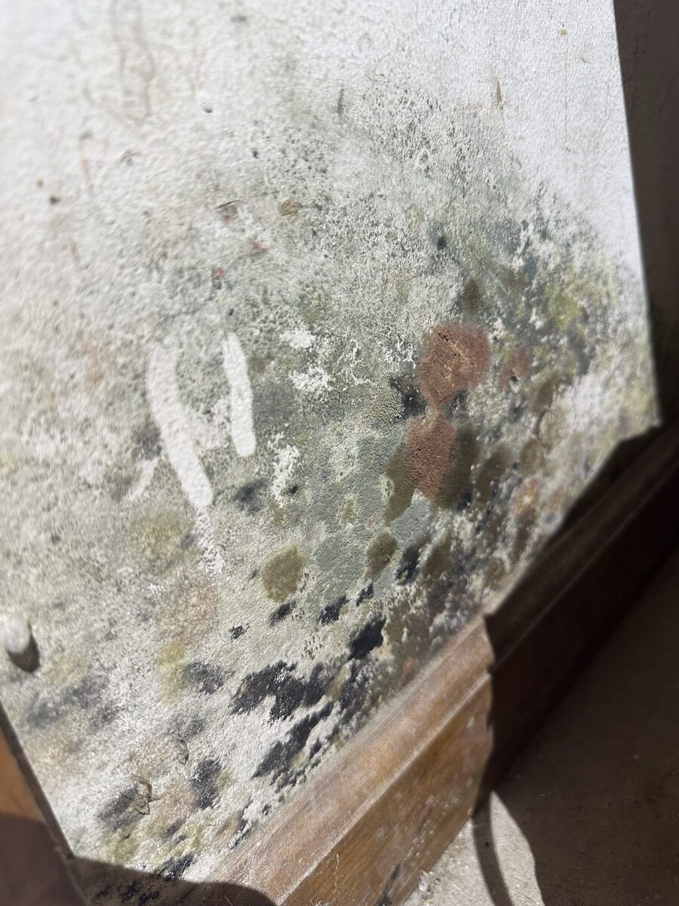

Mold Inspection & Testing in Boise, ID
Testing is useful in some situations and a waste of money in others. If you can already see mold, you usually don’t need a lab to tell you it’s there. Use the tool below to see which kind of inspection fits your situation.
- Moisture mapping
- Thermal imaging
- Air & surface sampling
- Real estate

Which inspection fits your situation?
Answer a few questions. It isn’t a diagnosis, but it shows where most homeowners in your position end up.
The parts of a mold inspection
A good inspector picks from these based on your situation. More tests don’t mean a better inspection.
Still not sure whether you need a test?Describe the smell, the symptoms or the house you’re buying. A local inspector can tell you what’s worth checking.
Call (321) 985-3339Why the petri dish from the hardware store won’t tell you much
Settle-plate kits leave an open dish out to catch whatever lands on it. Mold spores are everywhere, indoors and out, so almost every dish grows something. The kits have no outdoor comparison, no volume of air measured and no way to tell whether what grew is unusual for your home.
Professional air sampling pulls a measured volume of air through a cassette, with an outdoor sample as a baseline. A lab compares the two. That comparison is what makes the result meaningful.
If cost is a concern, a moisture-focused visual inspection without lab work is often the best first step.
Common questions
How long does a mold inspection take?
A typical single-family home takes one to three hours on site. If air samples go to a lab, results usually come back within a few business days.
Should the inspector and the remediator be different companies?
Many homeowners prefer that, especially for post-remediation clearance testing, so the company checking the work isn’t the one that did it. Ask us how we handle it.
Can a mold test tell me if mold is making me sick?
No test can confirm a health effect. Testing can show whether indoor spore levels are elevated compared to outside. Health questions belong with your doctor.
Is mold inspection part of a standard home inspection?
Generally no. Home inspectors note visible moisture and staining but don’t usually sample or use specialized equipment for mold.